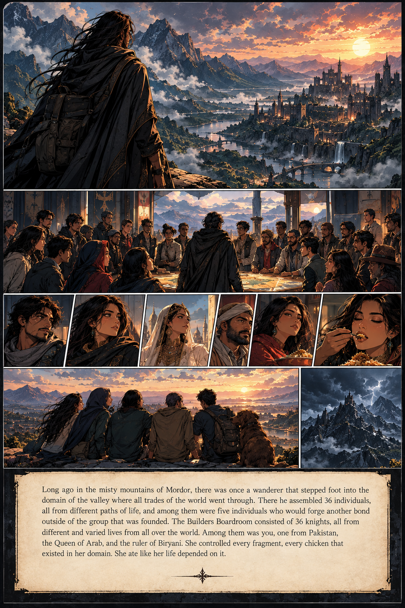

a tale worth remembering
The Story
Seven pages. One very questionable historical account.

Page 1 of 7
Use the arrows, or your keyboard ← →
a tale worth remembering
Seven pages. One very questionable historical account.

Use the arrows, or your keyboard ← →